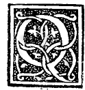

CHAPTER VII¶
On the First Effect of a Line Divided According to Our Proportion

Before proceeding further, we must explain how the said proportion is to be understood and interposed among quantities, and how it is named by the wisest authors in their volumes. I say, therefore, that it is called proportio habens medium et duo extrema—that is, “the proportion having a mean and two extremes”—which is a proper attribute (propria passione) of every ternary [triplet of terms]. For whatever ternary be assigned, it will always have a mean together with its two extremes, since a mean is never understood without extremes.
In this manner Euclid teaches how to divide a quantity in the nineteenth [thirtieth] proposition of the Sixth Book ([VI.30]), having first defined in the third definition of the Sixth Book ([VI.def.3]) how such a division is to be understood; although in his Second Book, in the eleventh proposition ([II.11]), he already demonstrated how to divide a line with the very same virtue and power, without however naming “proportion” until he had passed through the Fifth Book; and Campanus also adduces it among numbers in the sixteenth proposition of the Ninth Book ([IX.16]). Let this suffice regarding its designation.
How Its Mean and Its Extremes Are to Be Understood¶
Having understood how our proportion is called by its particular name, it remains to explain how the said mean and extremes are to be understood in any quantity whatever, and how they must be conditioned so that the said Divine Proportion may be found among them.
To this end, one must know—as is set forth in the Fifth Book—that between any three terms of one and the same kind (de un medesimo genere) there are necessarily two relations or ratios (habitudini o vogliam dire proportioni): namely, one between the first term and the second, and another between the second term and the third.
Numerical Example of Continuous Proportion
For example, let there be three quantities of the same kind (for otherwise no ratio is understood to exist between them, [V.def.3]): let the first be a and equal to $9$ in number, the second b and equal to $6$, and the third c and equal to $4$. I say that between them there are two ratios: one from a to b, that is, from $9$ to $6$, which among common ratios we call in our work [Summa] sesquialtera ($1\frac{1}{2} : 1$), which occurs whenever the greater term contains the lesser once and a half; for $9$ contains $6$ and also $3$, which is half of $6$, and for this reason it is called sesquialtera.
(Since we do not intend here to treat of ratios in general—having treated and explained them fully and at length, together with proportionalities, in our aforesaid work—I shall not trouble to expand upon them here; rather, let everything said of them in general, with their definitions and divisions, always be presupposed, and let our present discourse be devoted solely to this unique proportion, since no one has hitherto treated of it with so extensive and useful a development.)
Now returning to our undertaking concerning the three quantities: there is likewise from the second term b to the third term c—that is, from $6$ to $4$—a second ratio, which is similarly sesquialtera ($6 : 4 = 3 : 2$). Whether such ratios in general be similar or dissimilar we do not care at present; our sole intent is to make clear that among three terms of the same kind two ratios are necessarily found.
I say likewise that our Divine Proportion observes the very same conditions: namely, between its three terms—the mean and the two extremes—it invariably contains two ratios that are always of one and the same denomination ([V.def.5]). In other proportions, whether continuous or discontinuous, this can happen in infinitely many varied ways: for sometimes among their three terms the ratio will be dupla ($2:1$), sometimes tripla ($3:1$), and so on running through all the common species. Between the mean and the extremes of this our proportion, however, it is impossible for the ratio ever to vary, as will be told.
Whence this was deservedly the fourth correspondence with the Supreme Artificer. And in that it is numbered among the other proportions without species or further difference, while preserving the conditions of their definitions, we may liken it to our Savior, who came not to destroy the Law, but to fulfill it (Matthew 5:17), and conversed among men, making Himself subject and obedient to Mary and Joseph (Luke 2:51). Even so, this our proportion, sent down from heaven, accompanies the other proportions in definition and conditions, and does not degrade them, but rather magnifies them more amply, holding the principate of unity among all quantities indifferently and never changing—even as our holy Severinus [Boethius] says of the Great God: Stabilisque manens dat cuncta moveri (“And remaining steadfast, He gives all things to be moved,” De consolatione philosophiae III, m. 9).
Defining Condition of the Divine Proportion
Wherefore, in order to recognize it among occurring quantities, one must know that among its three terms it is invariably found disposed in continuous proportionality in this manner: namely, that the product of the lesser extreme and the sum of the lesser extreme and the mean is equal to the square of the mean:
$$b(b + a) = a^2$$
Consequently, by the tenth definition of the Fifth Book ([V.def.10]), the said sum ($a + b$) will necessarily be its greater extreme. And whenever three quantities of any kind whatever are found thus ordered, they are said to be according to the proportion having a mean and two extremes ([VI.def.3]); and its greater extreme is always the sum of the lesser extreme and the mean.
Hence we may say that the said greater extreme is the whole quantity divided into those two parts—namely, the lesser extreme ($b$) and the mean ($a$)—under that condition. From this it must be noted that the said proportion cannot be rational, nor can the lesser extreme and the mean ever be denominated by any rational number when the greater extreme is rational; for they will always be irrational ([XIII.6]), as will be openly shown below. And in this third way it accords with God, as stated above.